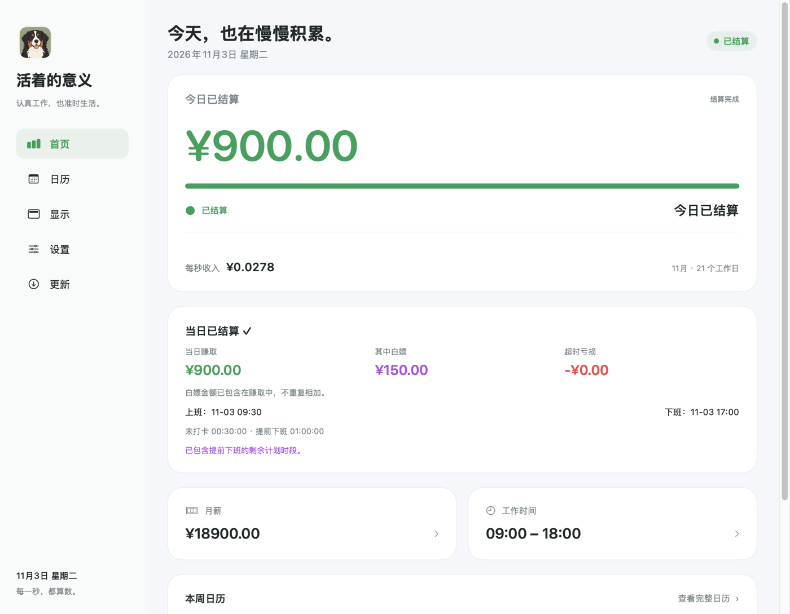

每一秒，正在入账
月薪按实际工作日换算。收入与下班倒计时，在菜单栏里实时可见。
¥637.14 | 距下班 02:18:36
菜单栏抬头可见 · 以下切换为交互演示
小而刚好
留在菜单栏里。
用得到时，就在那里。
月薪按实际工作日换算。收入与下班倒计时，在菜单栏里实时可见。
打卡前的收入归入“白嫖”，打卡后继续累计。下班打卡，停止新增超时亏损。
内置 2025–2027 年中国大陆放假调休安排。也可以按自己的作息调整某一天。
敏感模式用物品代替金额。衣服首饰、数码电子、零食美食，或自定义自己的小目标。
系统屏幕镜像时自动隐藏，可选外接屏隐藏。会议共享前也能手动开启演示隐私。
无需注册账号，不上传薪资。设置可以用密码保护，密码校验记录保存在 Mac 钥匙串。
今天，就到这里

界面中的金额为演示数据。白嫖已包含在当日赚取中，不重复相加。
开始很简单
打开 DMG，把“活着的意义”拖到 Applications，再从应用程序启动。
确认月薪、上下班时间与工作日，保存后开始记录。工资只保存在你的 Mac。
在首页或菜单栏详情中打卡。之后也可在应用“更新”页直接检查和安装新版。
首次打开提示无法验证开发者？ 当前版本未做 Apple 公证。 确认来自本官网后，尝试打开应用，再到“系统设置 → 隐私与安全性”查看“仍要打开”。 无需关闭系统安全保护。
你可能想知道
可以。主窗口和菜单栏支持所有符合系统要求的 Mac。配备 Touch Bar 时，应用在前台可显示对应信息； 切换到其他应用后，Touch Bar 会跟随系统切换。
没有下班打卡时，会按每秒薪资累计独立的超时亏损。下班打卡后停止新增亏损。 退出期间不会补扣；退出不等于打卡，重开后仍可能继续计时。睡眠期间若应用未退出，计时继续。
确认提前下班后，剩余计划工作时间会一次性计入当日收入，并归为白嫖。 上班前未打卡的计划时段也属于白嫖。白嫖是总收入的子集，不重复相加。
系统镜像可以触发自动隐藏，也可选择连接外接显示器时隐藏。会议软件和录屏方式不一定能被识别， 共享前建议按 ⌃⌥⌘P 手动隐藏。隐藏期间后台计时继续。
从本官网安装的发布版本内置更新源，在应用“更新”页检查即可。更新清单和安装包会验证发布签名， 确认后才安装，并保留本机设置和记录。旧试用版可先手动安装一次官网版本。
也别忘了，把时间留给喜欢的生活。